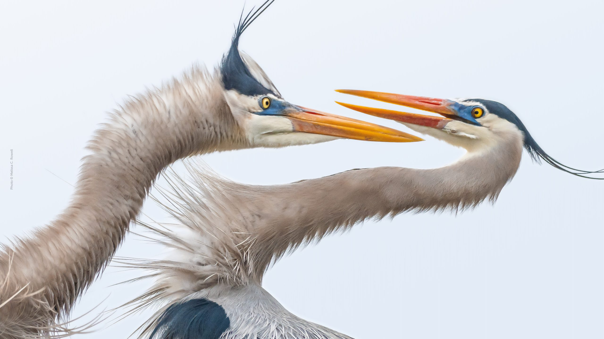

Aujourd'hui
Le parc du Marquenterre est un lieu privilégié pour observer la nature, les espèces animales et végétales de la baie de Somme.
De nombreux oiseaux s’y reposent lors de leur parcours migratoire :

Photo © Melissa C.Rowell
Quelques oiseaux :
- la Spatule blanche (Platalea leucorodia)
- l’Avocette élégante (Recurvirostra avosetta)
- la Cigogne blanche (Ciconia ciconia)
- l’Aigrette garzette (Egretta garzetta)…